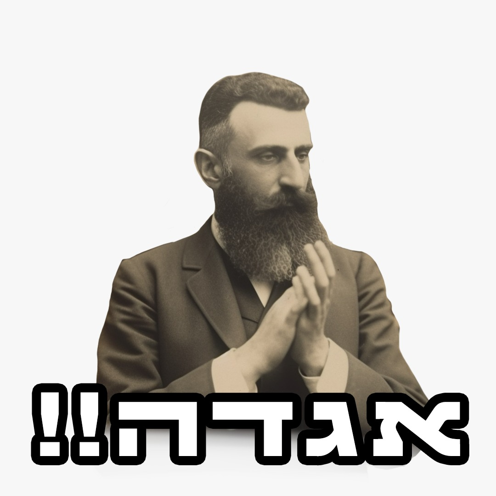
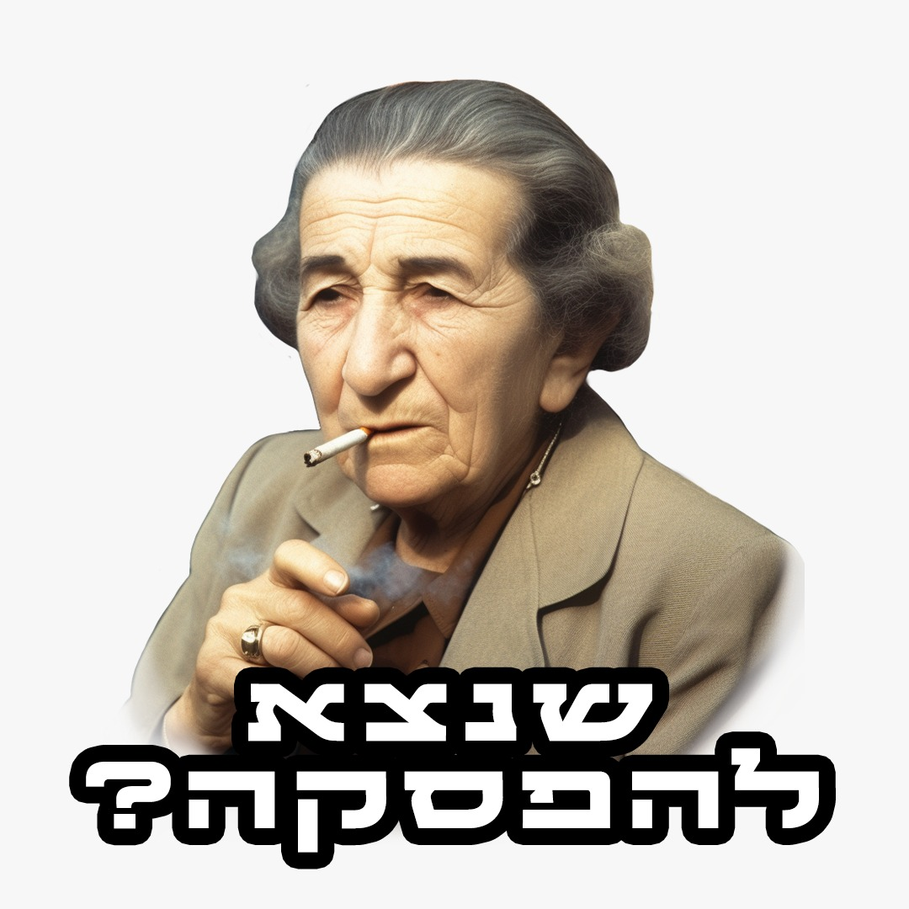
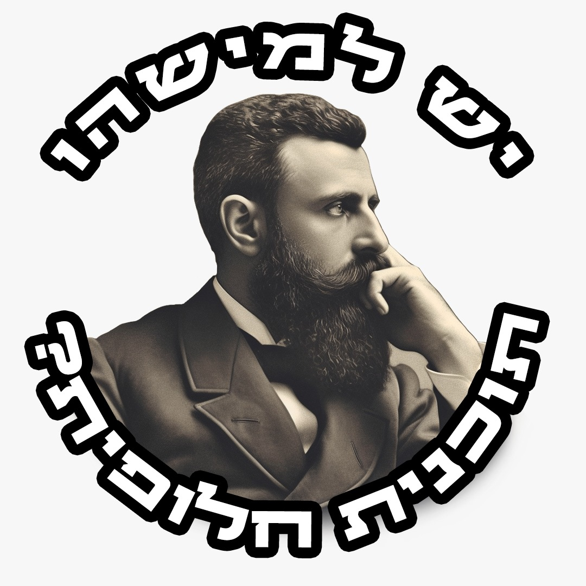
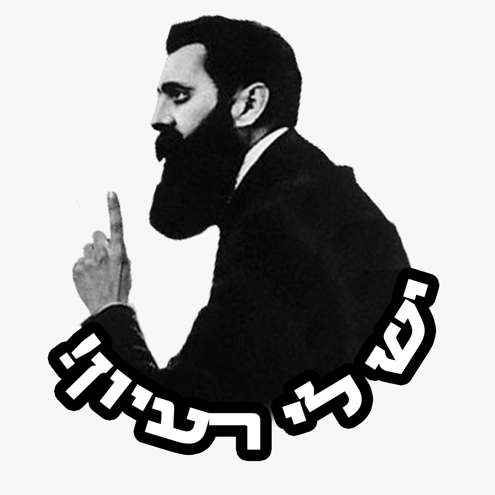

ההסתדרות הציונית הוקמה כארגון גג, לאיחוד פעולתם של כל הגופים הציוניים בעולם. הדור הצעיר שגדל פה הולך ומתרחק מהישראליות ומיהודיות שלו- זה הזמן לקרב אותם בחזרה, להכיר להם את החשיבות הרבה שבמדינה שלנו, לאחד ביניהם באמצעות המקורות שלהם- בשפה שלהם, בגובה העיניים והכל, כדי שבסופו של דבר נוכל להעביר להם את המסר החשוב- שעתיד הציונות הוא בידיים שלהם.
ציונות, היסטוריה, מנהיגים בלהבלהבלה…. סורי, יש דברים שפשוט לא מתאימים לדור של היום. כדי לקרב בין הדור הצעיר לעולם הציוניות כינסנו את כל הדמויות האייקוניות מההיסטוריה הישראלית לערכת סטיקרים לוואטסאפ שיתאימו בול לכל סיטואציה, לכל רגש, או בקיצור- לכל מה שקשה יותר קשה לבטא במילים.
|  |  |
|  |  |